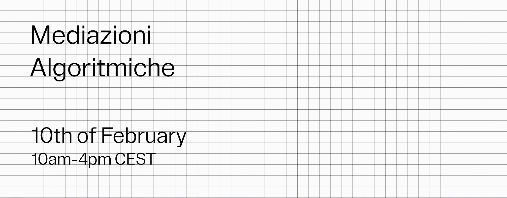

Mediazioni Algoritmiche

Visit the website
Virtual exhibition for th sixteenth edition of the Final Synthesis Design Studio.
Master's Degree in Communication Design, Politecnico di Milano.
The FSDS is a Synthesis lab that takes place at Politecnico di Milano, in the last year of the Master's Degree in Communication Design between September 2020 and February 2021.
Role: WEB DESIGN / FRONT END
Web Design |
February 2021 |
Professional Project |
Virtual Exhibition |